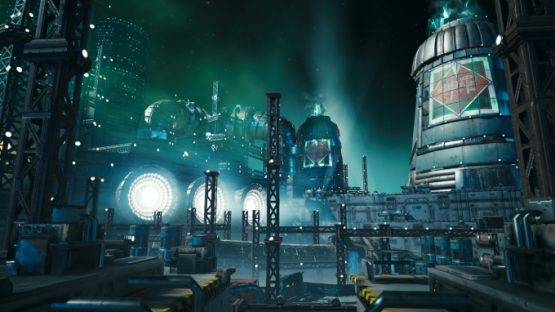
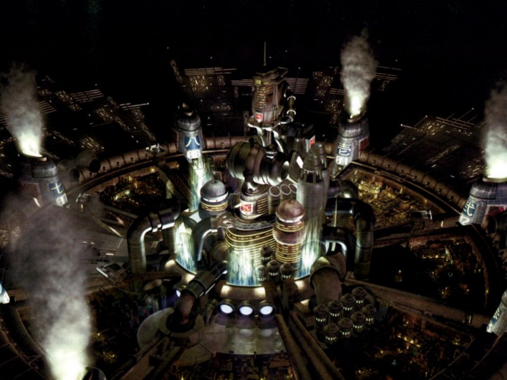

ShinRa Department of Urban Development
Welcome to the Department of Urban Development. We manage all of Midgar's day-to-day affairs such as city planning and event management. Below are some of the key involvements that are managed by us.
|  |
Mako ReactorsConstruction of mako reactors is an important part of urban development. These reactors are necessary to provide energy around the planet and are a key line of business that generates over seventy percent of ShinRa profits. |
|
City of MidgarWith Midgar being the largest city on Gaia, there is always more work to do. The city is constantly expanding and evolving. The upper plates are rated #1 as the safest places to live according to Gaia Weekly, the popular magazine headquartered in Midgar. |
 | |
Inspections and RegulationsReeve Tuesti, our CEO, personally oversees the regulation guidelines and inspections that uphold company safety standards. He takes pride in doing a good job and keeps ShinRa performing at optimal conditions. |
||